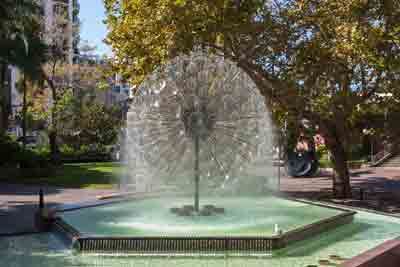
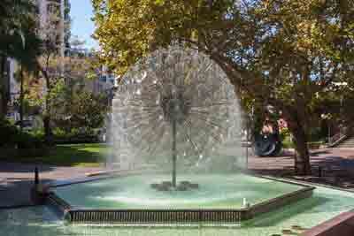

Tour #1 - Half Day
City Sights & Bondi Beach
This is a half day that maximises time and highlights Sydney’s iconic and picturesque locations.
We then venture to the Botanical Gardens, Mrs Macquarie’s Chair and the ever-evolving suburbs of Woolloomooloo and Kings Cross. Following the harbour, we journey through the city’s eastern bays out to south head. We are then off to iconic Bondi Beach and return to the city via fashionable Oxford Street, Paddington.
Book Tour#1
 

Guests are picked up from their city hotel at 8am and returned at 12 midday or picked up at 1pm and returned at 5pm. (Guests have options regarding return if an alternative drop off is possible.)
| Pricing | |
|---|---|
| Up to 4 people | $520 |
| Up to 6 people | $660 |
| Up to 8 people | $800 |
Tour #2 - Full Day
City Sights & Bondi Beach
The city of Sydney is regarded as one of the most picturesque cities in the world. Its streets and surrounding suburbs are full of history that have created a vibrant, cosmopolitan and friendly locale that welcomes international visitors.
After city hotel pick up, we journey straight to where Australia’s colonial history began. A short walk on the Sydney Harbour Bridge and up into the southern pylon for some spectacular 360-degree views. We then venture to the Botanical Gardens, Mrs Macquarie’s Chair and the ever-evolving suburbs of Woolloomooloo and Kings Cross. Following the harbour, we journey through the city’s eastern bays out to south head. After a waterside lunch it is off to iconic Bondi Beach for a stroll on the promenade. We return to the city via fashionable Oxford Street, Paddington.
Additional options, upon request, for this tour include:
| Optional add ons | Additional Pricing |
|---|---|
| Botanical Gardens Tour | $Pricing upon request |
| Sydney Opera House Tour | $ |
| Sydney Harbour Cruise | $ |
| NSW Art Gallery | $ |
| Hyde Park Barracks Convict Tour | $ |
| Sydney Tower/td> | $ |
Guests are picked up from their city hotel at 9am and returned at 4.30pm (subject to any additional tours).
| Pricing | |
|---|---|
| Up to 4 people | $720 |
| Up to 6 people | $900 |
| Price does NOTinclude lunch or additional tours |
Guests are picked up from their city hotel at 8am and returned at 12 midday or picked up at 1pm and returned at 5pm. (Guests have options regarding return if an alternative drop off is possible.)
| Pricing | |
|---|---|
| Up to 4 people | $520 |
| Up to 6 people | $660 |
| Up to 8 people | $800 |